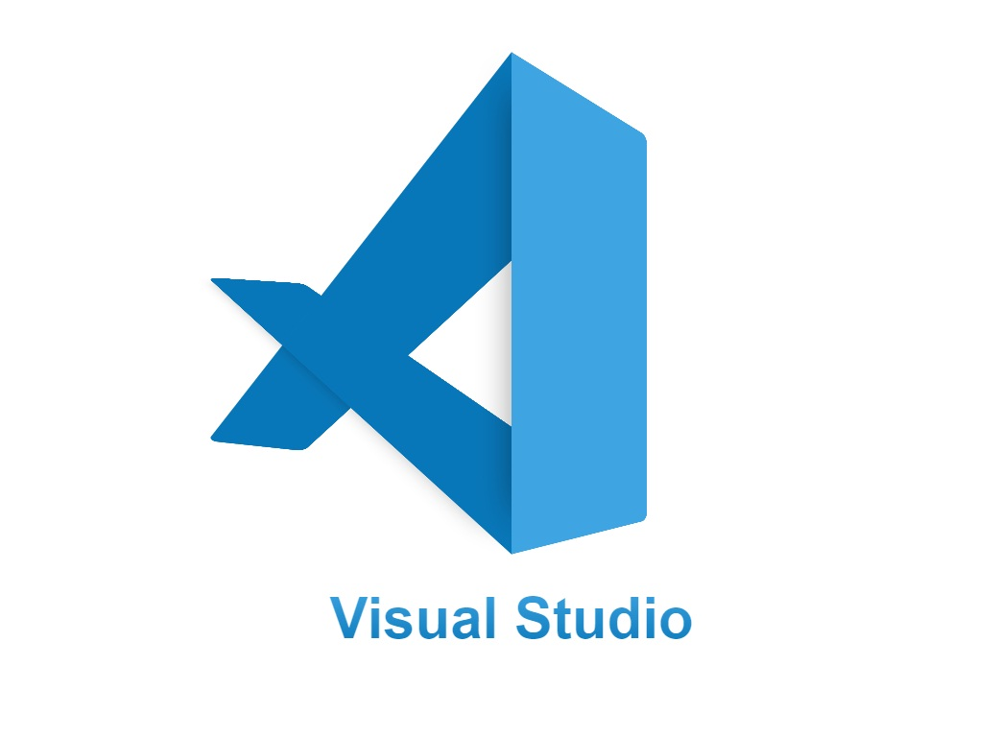
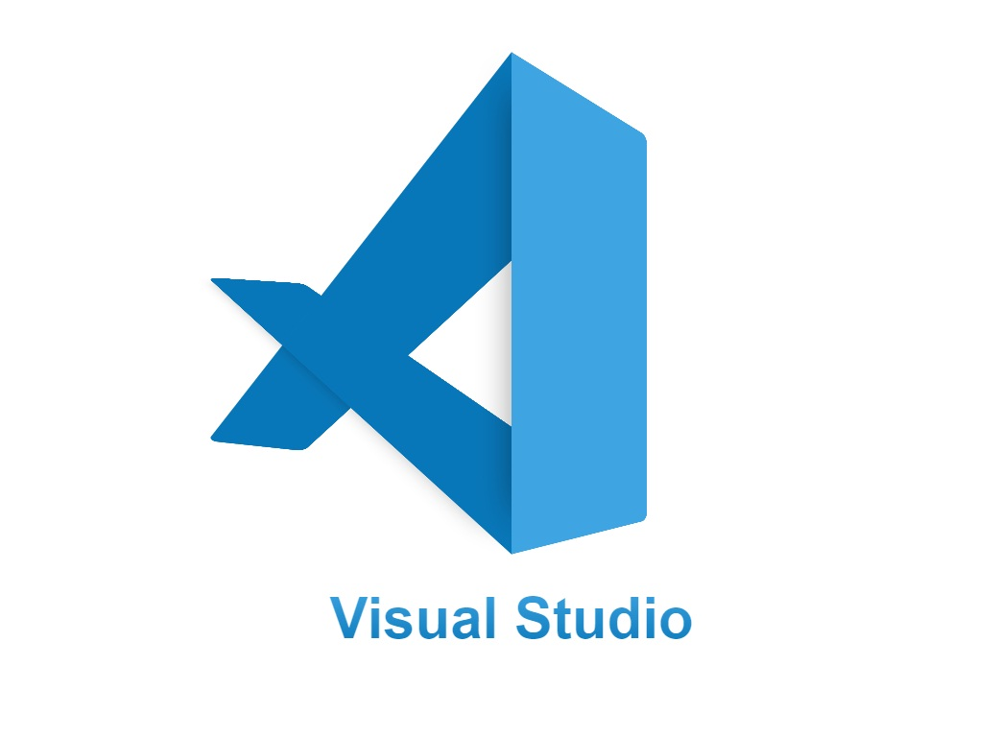

SISTEC: 38647/110459542CM
Mateus Henrique Fonseca Xavier da Silva
Softwares:
Projeto Arquitetônico Revit
Planta baixa Revit
Projeto Elétrico - Revit
Planta baixa Autocad
Renderização Externa -Twinimotion
Renderização Externa 3DS max chaos cosmos
Pacote Office: Word, PowerPoint e Excel
Programação Web: HTML, CSS, JavaScript + Copilot - VS Code
Canvas Design
Planejamento de construção MS Project
Renderização com Twinmotion
Projetos renderizados com o Twinmotion, destacando aspectos de design e visualização de projetos arquitetônicos.
Projetos em Revit
projetos em Revit, incluindo plantas baixas, projetos arquitetônicos e elétricos.
Projetos em 3ds Max
Renderizações e modelos criados com o software 3ds Max, demonstrando projetos de design e visualização arquitetônica.
Projetos em Autocad
Projetos desenvolvidos no Autocad, incluindo plantas baixas e detalhes arquitetônicos.